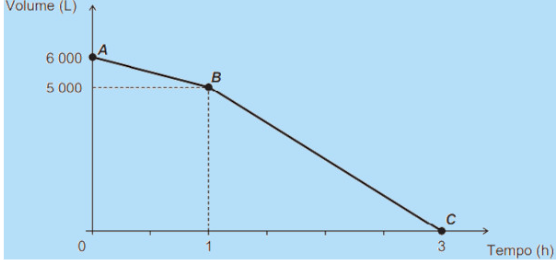

πclass — o principal pilar do seu aprendizado


A função afim, também chamada de função do 1º grau, é uma função definida por:
f(x)= ax + b
Sendo a e b números reais.
Neste tipo de função, o número a é chamado de coeficiente de x e representa a taxa de crescimento ou taxa de variação da função. O "a" determina a inclinação da reta.
Já o número b é chamado de coeficiente linear, sendo um termo constante. Ele representa o ponto de intersecção da reta com o eixo y das ordenadas. A função afim é representada graficamente por uma reta no plano cartesiano.
Toda função afim possui como conjunto domínio os números reais, assim como seu contradomínio, f : ℝ→ℝ. Ainda, nas funções afins, o conjunto imagem é igual ao contradomínio.
O gráfico de uma função polinomial do 1º grau é uma reta oblíqua aos eixos Ox e Oy. Desta forma, para construirmos seu gráfico basta encontrarmos pontos que satisfaçam a função.
Exemplo de como desenhar o gráfico de uma função afim:Construa o gráfico da função f (x) = 2x + 3.
Para construir o gráfico desta função, vamos atribuir valores arbitrários para x, substituir na equação e calcular o valor correspondente para a f (x).
Sendo assim, iremos calcular a função para os valores de x iguais a: - 2, - 1, 0, 1 e 2. Substituindo esses valores na função, temos:

Os pontos escolhidos e o gráfico da f (x) são apresentados na imagem abaixo:

No exemplo, utilizamos vários pontos para construir o gráfico, entretanto, para definir uma reta bastam dois pontos.
Para facilitar os cálculos podemos, por exemplo, escolher os pontos (0,y) e (x,0). Nestes pontos, a reta da função corta o eixo Ox e Oy respectivamente.
Como o gráfico de uma função afim é uma reta, o coeficiente a de x é também designado por coeficiente angular. Esse valor representa a inclinação da reta em relação ao eixo Ox.
O termo constante b é chamado de coeficiente linear e representa o ponto onde a reta corta o eixo Oy. Pois sendo x = 0, temos:
y = a.0 + b ⇒ y = b
Quando uma função afim apresentar o coeficiente angular igual a zero (a = 0) a função será chamada de constante. Neste caso, o seu gráfico será uma reta paralela ao eixo Ox.
Abaixo representamos o gráfico da função constante f (x) = 4:
Ao passo que, quando b = 0 e a = 1 a função é chamada de função identidade. O gráfico da função f (x) = x (função identidade) é uma reta que passa pela origem (0,0).
Além disso, essa reta é bissetriz do 1º e 3º quadrantes, ou seja, divide os quadrantes em dois ângulos iguais, conforme indicado na imagem abaixo:

Temos ainda que, quando o coeficiente linear é igual a zero (b = 0), a função afim é chamada de função linear. Por exemplo, as funções f (x) = 2x e g (x) = - 3x são funções lineares.
O gráfico das funções lineares são retas inclinadas que passam pela origem (0,0). Representamos abaixo o gráfico da função linear f (x) = - 3x:
A função Afim é crescente quando o coeficiente angular for positivo, ou seja, a é maior que zero. Caso contrário, se a for negativo, a função será decrescente. Por exemplo, a função 2x - 4 é crescente, pois a = 2 (valor positivo). Entretanto, a função - 2x + - 4 é decrescente visto que a = - 2 (negativo). Essas funções estão representadas nos gráficos abaixo:

Uma função é crescente quando ao atribuirmos valores cada vez maiores para x, o resultado da f (x) será também cada vez maior.
Já a função decrescente é aquela que ao atribuirmos valores cada vez maiores para x, o resultado da f (x) será cada vez menor.
Seleção de videoaulas sobre esse assunto com ótimos professores que os ofertam gratuitamente na internet:
1. Enem 2018 – PPL) Uma indústria automobilística está testando um novo modelo de carro. Cinquenta litros de combustível são colocados no tanque desse carro, que é dirigido em uma pista de testes até que todo o combustível tenha sido consumido. O segmento de reta no gráfico mostra o resultado desse teste, no qual a quantidade de combustível no tanque é indicada no eixo y (vertical), e a distância percorrida pelo automóvel é indicada no eixo x (horizontal).

A expressão algébrica que relaciona a quantidade de combustível no tanque e a distância percorrida pelo automóvel é:

2. Encceja 2018) Uma prestadora de serviços cobra pela visita à residência do cliente e pelo tempo necessário para realizar o serviço na residência. O valor da visita é R$ 40 e o valor da hora para realização do serviço é R$ 20.
Uma expressão que indica o valor a ser pago (P) em função das horas (h) necessárias à execução do serviço é:
3. (Enem 2016) Uma cisterna de 6 000 L foi esvaziada em um período de 3 h. Na primeira hora foi utilizada apenas uma bomba, mas nas duas horas seguintes, a fim de reduzir o tempo de esvaziamento, outra bomba foi ligada com a primeira. O gráfico, formado por dois segmentos de reta, mostra o volume de água presente na cisterna, em função do tempo.
Qual é a vazão, em litro por hora, da bomba que foi ligada no início da segunda hora?
4. (UFSM) Sabe-se que o preço a ser pago por uma corrida de táxi inclui uma parcela fixa, que é denominada bandeirada, e uma parcela variável, que é função da distância percorrida. Se o preço da bandeirada é de R$ 4,60 e o quilômetro rodado é R$ 0,96, a distância percorrida pelo passageiro que pagou R$ 19 para ir de sua casa ao shopping é de:
5. Uma determinada espécie de pimenta, ao atingir 20 centímetros de altura, começa a crescer de forma linear. A cada dia que se passa, essa planta aumenta 2,5 centímetros. Assim, é possível descrever essa situação como uma função do 1º grau, em que a altura h(d) está em função dos dias, cuja lei de formação é: